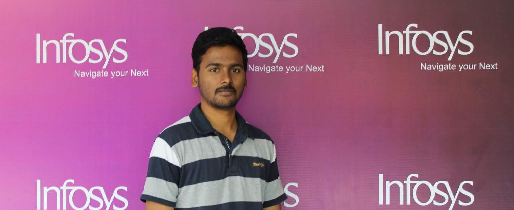

Senior Systems EngineerAug 2020 to Jan 2021
- Used SPel expressing language to process and manipulate the messages (XML) received from the upstream applications and send them to downstream applications.
- Developed application to parse the XMLs and JSON files received from the upstream and prettify them.
- Converted the Stateless application to stateful by persisting data in oracle database using JDBC.
Systems EngineerDec 2018 to Aug 2020
- Involved in changing the application from one-factor authentication to two-factor authentication.
- Worked in an agile methodology to reach client expectations.
- Enhanced the frontend part of the application as per the client’s request.
- Played an important role in migrating the application from RHEL5 to RHEL6, SVN to GITHUB and SRLweb to Teamcity.
Systems Engineer TraineeJul 2018 to Dec 2018
- Worked on different layers of Spring MVC architecture such as Spring - Controller, Service and Repository classes.
- Worked upon Services, Components and Routing in Angular.
- Developed the RESTful webservices
- Persisted the data in MySQL database using Spring data JPA.